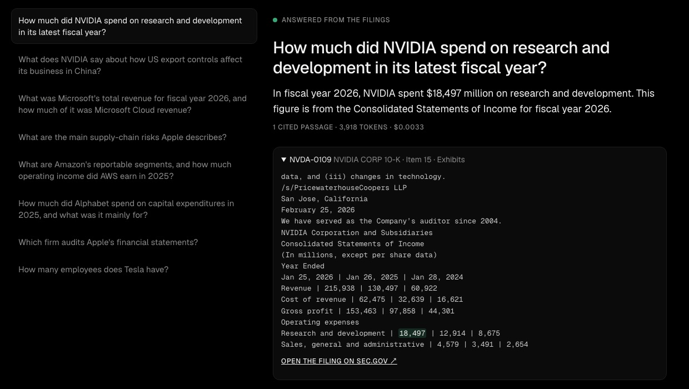

LLM · RAG · 2026-10
Ask the 10-K
An LLM assistant that answers questions from five companies' SEC annual reports, cites the passage behind every fact, and says when the answer isn't there.

The demo shows recorded answers. This site is static, so it never calls the API or holds a key.
01 — The problem
A 10-K annual report runs to hundreds of pages, and analysts search them constantly: what was operating income, what are the export-control risks, who's the auditor? A chatbot can answer fluently, but a fluent wrong number is worse than no answer. The question here is whether an LLM can answer only from the filings, show exactly where each fact came from, and admit when the answer isn't there.
02 — What I built
A retrieval-augmented generation (RAG) pipeline over the latest 10-Ks of Apple, Microsoft, Amazon, Alphabet and NVIDIA, pulled from SEC EDGAR:
- Parsing: HTML to clean text with 10-K sections labelled and every table row kept on one line, cut into 730 passages.
- Search: keyword (BM25), meaning (OpenAI embeddings) and a hybrid of the two, compared on a test set.
- Answering: gpt-5.4-mini answers from the top 6 passages only, cites passage ids, returns figures in millions, and says
found: falsewhen it can't find the answer. - Grading: 30 questions, with right answers taken from the SEC's structured XBRL data, which the model never sees.
- A static demo of recorded answers, with each cited passage and the figure highlighted.
03 — How it was built
- 01
Download five 10-Ks from the SEC
EDGAR's submissions API gives each company's latest 10-K. The SEC asks automated clients to identify themselves, so requests carry a contact address. The same script pulls each company's XBRL "company facts", the SEC's machine-readable financial numbers, which are later used only to grade answers.
- 02
Turn HTML into passages that keep tables readable
Filings are inline-XBRL HTML: a hidden data header, then text and tables. The parser skips the hidden part, labels sections (Item 1A Risk Factors, Item 7 MD&A, Item 8 Financial Statements…), and keeps each table row on one line. My first version put every table cell on its own line, which loses which number belongs to which row and year, so financial questions would have failed.
Year Ended June 30, | 2026 | 2025 | 2024 Total revenue | 331,839 | 281,724 | 245,122 Operating income | 155,237 | 128,528 | 109,433 Net income | 133,749 | 101,832 | 88,136 - 03
Embed every passage
Each passage (with its company and section prepended) became a 1,536-number vector with OpenAI's
text-embedding-3-small: 365,819 tokens for $0.0073. Questions are embedded the same way, and the closest passages by cosine similarity are the "meaning" search. - 04
Search: keyword, meaning or both
BM25 is written from scratch, reciprocal rank fusion merges the two rankings, and a company filter keeps "Apple's…" questions inside Apple's filing. I expected the hybrid to win. Tested on the 25 answerable questions, top 6 passages:
Search Answer in the top 6 Keyword (BM25) 56.0% Hybrid 84.0% Meaning (embeddings) 100.0% Words like "revenue" and "income" appear in hundreds of passages, so keyword matching mostly added noise. The assistant uses meaning search.
- 05
Answer only from the passages, with citations
The six passages go to
gpt-5.4-miniwith strict rules (use only these passages, cite their ids, give money in millions, never guess) and a JSON schema the reply must match. Citations to anything not actually retrieved are dropped.{ "found": true, "answer": "In fiscal year 2026, NVIDIA spent $18,497 million on research and development.", "value_usd_millions": 18497, "citations": ["NVDA-0109"] } - 06
Grade it against data the model never sees
20 money questions (revenue, net income, operating income and total assets for each company) are graded against XBRL values: right if within 0.5%, and the citation must contain the figure. Five fact questions need specific words ("Deloitte", "North America, International, AWS"…). Five questions must be refused: Tesla isn't in the set, 2030 is the future, and so on.
- 07
Record a demo, including a miss
Eight showcase questions were recorded for the website (2.7 cents). One is a real miss worth showing: Alphabet's 2025 capital expenditures are in the filing as "purchases of property and equipment" ($91,447 million), so a question saying "capital expenditures" didn't retrieve that passage, and the assistant declined instead of inventing a number. That vocabulary gap is the next thing to fix.
04 — Results
| Test | Score |
|---|---|
| Money answers within 0.5% of XBRL | 20/20 |
| Their citations contain the figure | 20/20 |
| Fact questions | 5/5 |
| Correct refusals | 5/5 |
| Cost and time for all 30 | $0.10 · 50 s |
That's about a third of a cent per question. Honest limits: 30 fairly direct questions is a small, friendly test, and the capex example shows how unusual wording can still miss.
05 — What I'd do next
- Expand finance synonyms in the query ("capex" → "purchases of property and equipment") and re-test.
- Add a reranker and harder questions: comparisons across companies, ratios, multi-step reasoning.
- A small server so the demo can take live questions without exposing the key.